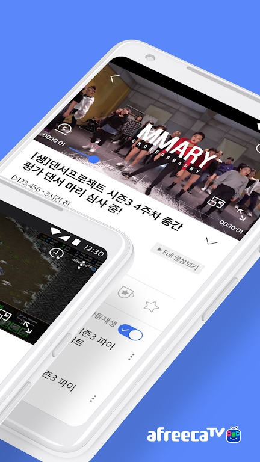
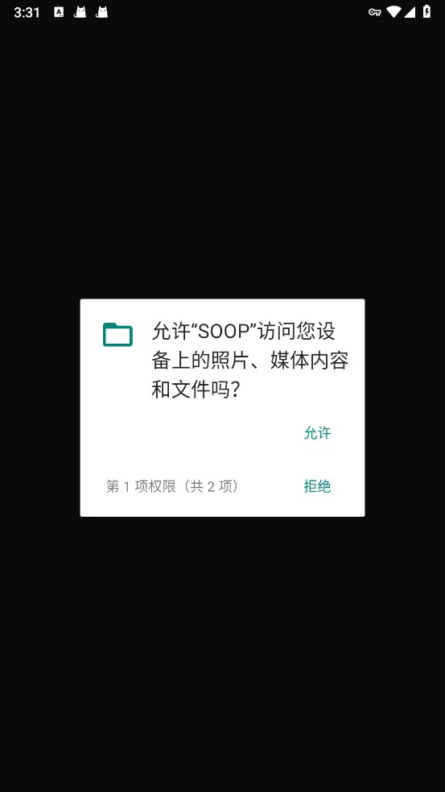

你以为它只是韩国版虎牙？Afreeca TV 这5个隐藏功能官方都不宣传
从旧版APK绕过系统门槛到QuickView Plus双路同看，从海外邮箱注册到老号迁移保留订阅——这些藏得很深的功能，大多数人用了一年都没发现。
我最初接触 Afreeca TV 纯粹是为了看 ASL 星际争霸联赛的直播——以为它就是个韩国版的虎牙斗鱼，刷一下、发个弹幕、偶尔打赏，完事。结果用了快三年，翻来覆去把设置扒了个底朝天，才发现这款应用藏了一堆afreeca tv官网从不主动宣传的冷门技巧，每一个都能实实在在提升使用体验。今天把这几个私藏抖出来，看看你中了几个。
老设备救星：旧版 APK 绕过 Android 8.1 门槛
官方商店里挂着的最新版，硬性要求 Android 8.1.0 以上。我那台压箱底的旧平板还是 Android 7，装不上——差点以为只能换设备。结果翻遍afreeca tv文档才挖到，旧版 8.12.1 对系统的要求居然只要 Android 5.2 以上——从下载拿就行，而且功能一点没砍。
这不是什么测试版或阉割版，是平台改名 SOOP 之前的最后一个稳定版。装在旧平板上，直播、Catch 短视频、弹幕、关注全部正常。唯一的区别只是界面还是 Afreeca TV 时期的老风格，SOOP 改名后的一些新视觉元素没有进去。但对一台只是想看直播的老设备来说，界面长什么样根本不重要。
什么人用得上： 手里还有 Android 5~7 老设备想刷直播的，别丢。什么人可以无视： 近三年内买的手机基本都是 Android 8.1 起，直接下最新版就行。
双路同看：QuickView Plus 同时盯两场直播
这个功能藏得真深——我是在刷电竞直播的时候，想同时看两场英雄联盟 KeSPA 杯，才偶然点到的入口。QuickView Plus 是官方推出的多画面订阅服务，解锁后客户端支持双路同看，一个屏幕上并排两个直播画面，还能各自调音量。
订阅门槛是 QuickView Plus 会员费，客户端本身没有额外系统要求——这点很良心，不像某些功能还限定系统版本。对体育迷和电竞迷来说，这个功能简直是刚需：比如同时盯两场不同场地的棒球赛，或者一边看直播一边挂着另一场等结果。
我最喜欢用它来同时追 ASL 星际联赛和 GSL 全球星际联赛，两个画面一左一右，不会错过任何一场精彩对局。

什么人用得上： 同时追两个赛事、两支队伍的重度观众。什么人可以无视： 每次只看一场直播的普通用户，没必要花订阅费。
海外注册：一个邮箱绕开韩国手机号
很多人以为 Afreeca TV 只能用韩国手机号注册——我当初也是这么想的，以为没韩国手机号就只能当路人刷直播。结果官方其实从一开始就提供了专门的海外注册通道，标准流程只需要一个邮箱，连手机号都不用填。
海外注册有两种方式：标准注册（邮箱表单）和 SNS 认证（第三方账号登录）。两者最终都需要填一套相同的基本信息——ID、邮箱、性别、出生日期、营销同意与否——区别只是身份验证环节由谁来做。标准注册靠邮箱验证邮件，SNS 认证靠你绑定的第三方账号。
有个细节值得注意：注册时填的出生日期会参与年龄校验，14 岁以下不能通过这两种方式开号。虚报年龄在后续验证中可能被限制，老老实实填。
还有个容易踩的坑：登录用的是你注册时填的 ID，不是邮箱。忘了 ID 有找回流程，但第一次注册完最好立刻记下来。
什么人用得上： 不在韩国、没有韩国手机号但想发弹幕或关注主播的海外用户。什么人可以无视： 只想匿名看直播的，不注册也能刷。
老号迁移：改名后关注订阅自动续
2024 年平台从 Afreeca TV 改名 SOOP 时，官方没有要求所有人立刻换账号——旧账号一直能登录。但他们悄悄上线了一个统一 SOOP 账号迁移机制，把旧号并入新账号体系，入口藏在首页活动横幅区。
我本来以为改名就是换了个皮肤，直到看到迁移指引才明白：迁移是升级而不是重开。完成迁移后，关注列表、订阅记录、打赏历史全部自动延续，登录凭据从旧 ID+密码换成统一 SOOP 账号，客服支持也从旧体系转到了新体系。
迁移流程很简单：登录旧号 → 找活动区的 Migration 入口 → 按引导创建新账号 → 身份验证 + 邮箱确认 → 用新号登录。整个过程大概五分钟。
有个小提醒：迁移入口随版本变化很快，不在首页活动区的话，说明当前版本已经把迁移并入了常规登录流程——直接登录旧号就能完成迁移，不用找什么特殊入口。
什么人用得上： 手里有 Afreeca TV 时期旧账号的老用户，迁一次一劳永逸。什么人可以无视： 改名后才开始用的新用户，直接注册 SOOP 账号就行。
虚拟形象开播：藏在指定渠道包里的门槛
这个是我在翻自己开播相关设置时发现的——平台提供的 Virtual Mode 虚拟形象开播功能，普通应用商店包用不了。官方只给指定商店渠道包开放了这个功能，而且安卓端还硬性要求 Android 14 以上，iOS 端是 iOS 18 以上且不含 iPad。
藏得有多深呢？如果你的安装包不是从那些指定渠道下来的，设置里根本不会出现 Virtual Mode 的入口——就像这个功能从来不存在一样。我之前用普通商店包刷了大半年，连提都没提过这个功能，直到换了指定渠道包才看到入口出现。
所以如果你想试试虚拟形象开播，先确认自己的安装包来源对不对，再检查系统版本够不够，别像我一样白找半天。
一个容易忽视的安全细节：APK 安装授权只针对单次来源
手动下载 APK 安装时，安卓会弹出「禁止安装未知应用」的提示。很多人打开权限后就不管了，其实这个授权有个容易忽视的细节：它只针对发起安装的那个应用——比如你的浏览器、网盘客户端或文件管理器——不是给 Afreeca TV 本身放行。
装完可以回到设置把那个来源的「允许安装未知应用」开关关回去，不影响已经装好的应用运行。这样下次用这个浏览器下别的 APK 时，还会再弹一次安全提示，不至于一路默认放过。
不同品牌手机的设置路径不一样，小米在应用信息 → 权限管理 → 允许安装未知应用，华为在设置 → 安全 → 更多安全设置 → 安装外部来源应用，OPPO 和 vivo 基本类似，三星藏在设置 → 安全性里。原生安卓最简单，弹窗里直接点「设置」就能跳转。

最后说几句
Afreeca TV 改名 SOOP 之后，界面风格和功能布局确实变了不少，但那些老用户熟悉的核心功能并没有消失，反而藏进了更深的菜单里。旧版 APK 的系统兼容、QuickView Plus 的双路同看、海外邮箱注册、老号迁移、虚拟形象开播的渠道限制——这些东西官方不主动宣传，但每一个都切中某一类用户的真实痛点。
把一个应用真正用透，不是跟着官方推荐的用法走，而是自己去翻那些没写在新手引导里的设置。这几个技巧我翻了快三年才挖出来，希望你用得上。
海外注册、老号迁移、系统要求这些细节的完整说明，可以去 Afreeca TV 官网的帮助中心翻——他们有专门的海外用户板块和版本对比表，写得比新手引导详细多了。安装包从官方下载页拿，核对一下 MD5 再装，稳妥一些。如果某些功能的入口位置和我描述的对不上，那大概率是你用的版本更新了，直接查最新的中文文档就行，文档站里的更新速度比官方帮助中心还快。
这套账号迁移指南和版本兼容表，我同步放到了三个仓库：GitHub 主库、国内访问更快的Gitee 镜像、还有GitCode 的备份——内容完全一致，随便哪个都能拿到。